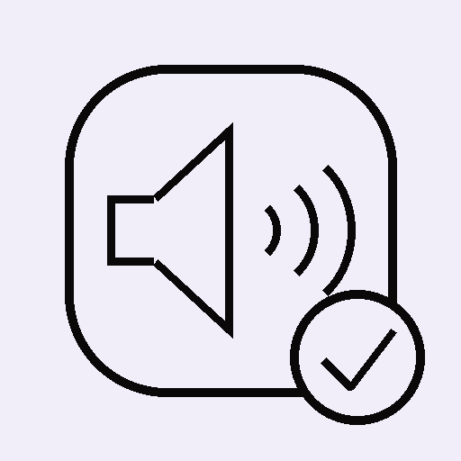

Wie laut ist es wirklich? 100% lokal, keine Datensammlung.
Der Browser fragt nach Mikrofon-Zugriff. Das Tonsignal wird nur live analysiert, nie aufgenommen oder gespeichert.
Noch keine gespeicherten Sitzungen.
Sichert deinen Verlauf als Datei (z. B. für ein neues iPhone) – bleibt dabei komplett auf deinem Gerät bzw. in deiner eigenen Ablage.
Gerundete, allgemein bekannte Richtwerte zur groben Orientierung – keine wissenschaftliche Messreihe.
Die App misst nicht kalibriert – Mikrofon, Gerät und Betriebssystem beeinflussen das Ergebnis. Die Werte sind eine Orientierung, kein Ersatz für ein geeichtes Schallpegelmessgerät und keine medizinische Beratung.
Version 1.2 · Stand 08/2026 · Teil der WahrZentrale